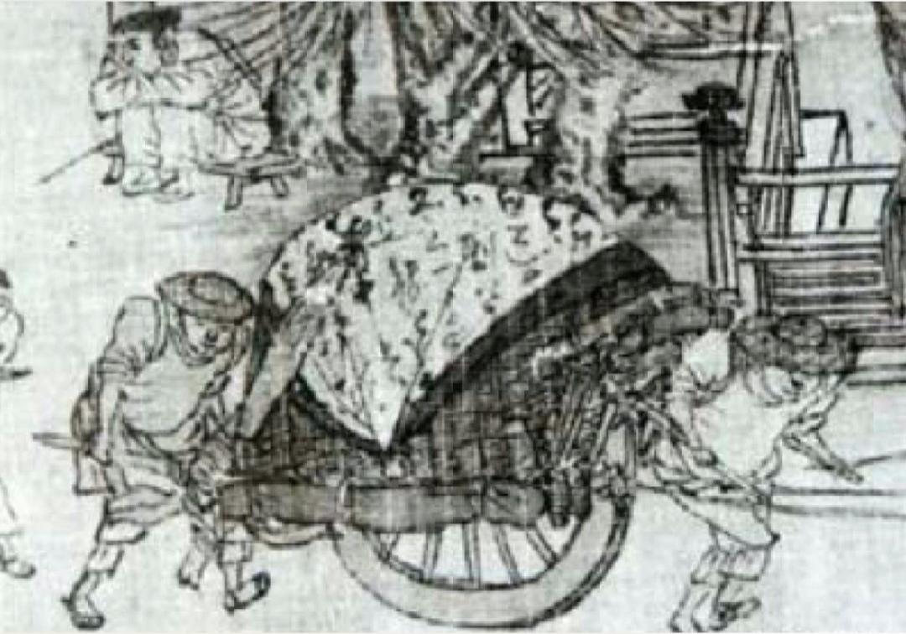
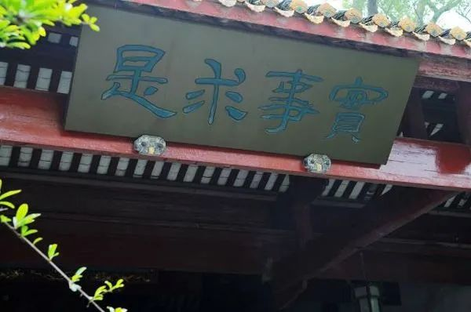

收录于合集
以下文章来源于丽江健康与环境研究中心 ，作者罗祎楠
丽江健康与环境研究中心 .
本中心为国际健康与环境组织在云南三江并流地区设立的中国项目部。致力于以村民为治理主体，通过 “内生式”项目服务理念，促进区域从人－社区－社会的变化和整合，从而使环境、社会、经济、文化成为一个健康发展、相互协调的有机整体，最终实现区域善治。
编者按 ：本文源自于北京大学政府管理学院助理教授罗祎楠博士在第四期“社区保护地与内生式发展”工作坊的讲座《“为己之学”——中国治理历史的内生性悖论与当代突破》，已经本人审阅；本文首发于“丽江健康与环境研究中心”微信公众号，转载版本作了若干内容修订。此讲稿并非正式发表的论文，未经作者同意，请勿引用。
罗祎楠博士毕业于哈佛大学东亚系，长期致力于以历史学和社会科学相结合的方法路径，研究中国治理体系和治理能力的内生性发展道路，特别是探索中国政治思想与国家治理发展的关系问题。研究领域包括中国中期帝国历史、传统中国政治理论、比较政治学。主要作品包括：《实践中的儒学：北宋新法时期国家经济干预的政治逻辑》；《模式及其变迁：史学史视野中的唐宋变革问题》等。
**** **“要我做”和“我要做” **
内生式发展，似乎是一个很抽象的问题。简单来说，我们讨论内生性问题就是讨论发展动力的问题。上小学的时候，老师一直不断地问我们的一个问题是：“要我学”还是“我要学”？如果是“要我做”，其实前面暗含有一个主语，“谁”要我做？比如政府、公司等要开展的一系列项目，“谁”要我做呢？是组织、上级。
什么是“要我做”？
从本质上说，当我们做一件事情的时候，在我们之外有一个独立于我们的、更有权力的体系、制度或组织。我们是其中的一员。所谓外在力量，可能是政府、领导、资本，也可能是非常广义的抽象群体，如观众、人民。我们这么做是为了满足他们的需求、得到他们的支持——是“为了”他们。在这中间，我们可能有很多的主动权，是非常灵活的个体，并且似乎不需要听任何人。
我们行为及目标的最终决定权是外在的，是属于超越个人的庞大组织、群体、系统、资本力量。从终极的层面来说，在“要我做”的逻辑中，人是不自由的，有外在的、非常大的力量左右着我们的行为。我们最终走下去的动力受制于外在事物。
这是什么呢？在政治学里，这就是权力现象——人们最终不能决定自己要做的事情，而由另外一个独立的体系或个体来决定人们做什么事情。在权力现象中，受到权力支配的一方，尽管可以在一些具体的情境下表现为非常的灵活、高兴、欢腾，但其最终是被整个权力体系所支配的。
什么是“我要做”？
首先，“我要做”并不意味着我可以脱离那些“要我做”背后的权力系统。换句话说，没有一个人能脱离于权力世界。即便是荒岛上的鲁滨逊，其背后也有一个权力世界在支配着他。这就是由他所信仰的《圣经》构造的上帝的世界。
因此，“我要做”是不可能脱离于“要我做”背后的权力世界或者体制而存在的。
“我要做”所要寻求的是，当我们身处在一个不可能摆脱的权力系统中时，自己如何获得持续不断的、不需要依赖于外在力量而持续做事情的动力。如果用哲学家的话说，这便是最为朴实本真的生活动力。它来自生生不息的生活意义世界。在“我要做”的持续过程中，我们会感到：从生活中获得的动力可以使自己超越、克服其中的种种不确定性。
生活是什么？
****生活总是被一个一个“事故现场”闯入，但这些事故产生之后，我们还要不要做这件事情？“我要做”的时候，不能光靠理想、信念、冲动，也不能只靠外部条件的支持。那么靠什么呢？
“内生”的本质除了“内”之外，还有“生”。这个“生”是怎么来的？孔子说：古之学者为己，今之学者为人。在孔子看来，“我要做”就是“为己之学”。我们要讨论的“内生性”就落在了“为己之学”。一说“学”，很多不再上学的人可能觉得离自己很遥远。在中国传统思想中，我们每个人现在做的所有工作都是“学”——了解、理解、探索外部世界，解决问题。我们坐在一块讨论，就是“学”。公益组织做的事情，比如在农村解决环境、贫困与教育问题的过程，全都是“学”。“学”看似遥远，其实就在我们身边。“为己之学”则是为了自己而学，就在我们生活之中。
**** 治理的历史悖论
在清华大学讲授MPA课程时，我跟来自政府部门、公益组织的人员说到上面的问题。他们一开始就觉得这是空话——虽然这话来自孔子，但也只是一种说法。当他们把这理解为一种说法的时候，其实已经蕴含了一个不自觉的想法。这个想法是有来源的。
理想中的道德观念一旦与外在的权力结合，就产生了一种逆反效应——本来我们讨论的是“我要学，我要做”的问题，结果就转化成了一种“要我学，要我做”的问题，反而更大地束缚了个人自主性。
这是在中国历史上经常出现的悖论。我们要试图去切断这种转化的可能。如果不切断，今天所有美好的东西，一旦登上主流媒体、黑板报，变成自上到下推动做的事情时，可能都会变成“要我学、要我做”，不管这种力量来自官僚体制，还是资本支持的公益组织。
我们能切断这种转化吗？
****这背后隐含着更深层次的考量。
第一个层面，当我们拥有或面对权力的力量时，我们应当如何安放自己？这是我想讨论的人和权力的问题，是核心问题，也是希望大家去思考的问题。
第二个层面是，什么样的组织方式才可以保证成员拥有生生不息的探索世界的动力—而不是依靠利益诱惑、高调的宣传或是强制？
我们可以从历史上看到那些让我们深思的方式。中国历史上很多杰出的思想都遭遇到了内生性的悖论——一开始是“我要做”，之后就变成了“要我做”，反过来压抑了“我要做”。我们从几方面分析这个悖论产生的过程。
官的逻辑
王安石在十一世纪就提到了“官的逻辑”。
“故天下之有德，通谓之君子。有天子、诸侯、卿大夫之位而无其德，可以谓之君子，盖称其位也；有天子、诸侯、卿大夫之德而无其位，可以谓之君子，盖称其德也。位在外也，遇而有之，则人以其名予之，而以貌事之；德在我也，求而有之，则人以其实予之，而心服之。夫人服之以貌而不以心，与之以名而不以实，能以其位终身而无谪者，盖亦幸而已矣。”
——王安石《君子斋记》
这段话的意思是：君子其实有两种，一种是靠官位，还有一种是靠德，即个人的修为。人的官位是自己掌握不了的，碰上就有了，别人叫他君子是因为他当官，大家对他的服从是“以貌事之”；德是属于自己的，但必须通过实事求是地“求”才能得到别人的尊敬；如果别人只是因为官位服从他、称呼他，而他这辈子不会因为事故被贬谪，简直是太幸运了。
一个人的名誉、地位都不是为己之学或“我要做”而得来的，而是外在的权力赋予的，这可以使别人在某段时间对他服从恭敬，但他不被权力左右的情况太少了，他的命运是不确定的。这就是一种官的逻辑，即根据权位决定人的称呼、名誉。
王安石说，官的逻辑还包括推行朝廷的法令。虽然命令很好，但由于地方官员不理解命令，不了解地方的情况，常出现朝廷“其意虽善”，但在真正推行的过程中，很可能出现恩泽不一定能“加于民”这种完全相反的情况。
“使之典狱，未尝以不知狱为耻，以今之典狱者，未尝学狱故也。天下之人，亦已渐渍于失教，被服于成俗，见朝廷有所任使，非其资序，则相议而讪之，至于任使之不当其才，未尝有非之者也。且在位者数徙，则不得久于其官，故上不能狃习而知其事，下不肯服驯而安其教，贤者则其功不可以及于成，不肖者则其罪不可以至于著。”
——王安石《万言书》
“典狱”就是监狱的管理人员。这些人不认为他们不懂监狱规则就是羞耻，觉得不必“学”，在这个监狱干两年，可以再去干别的事情。如果来了一个人，真的是踏踏实实想干事的，大家反而“相议而讪之”，聚集到一块，觉得这人简直是要惹事。这是另一种官的逻辑。现实中也有这样的例子：整个单位的人成天打麻将，从早打到晚，有一个人想做一些事情，但是当他要干的时候，别人还说，怎么不打麻将啊？
“钩校靡密、上下相遁。”
——朱熹《建宁崇安县五夫社仓记》
朱熹也说了一种官的逻辑。由官僚逻辑主导的社会救济、开仓放粮，结果是什么呢？这些官员们考虑的是，放了粮，如果收不回来怎么办呢？那么，这些官员接着就会想，最好先别放粮，有事先向上汇报，把程序弄清楚，等灾荒都过了再说。当时，朱熹的差遣职务是提点刑狱，相当于现在主管一省司法的领导。他自己也在基层探索了社仓制改革，目标也是要克服“官的逻辑”。
“往者新民盖常弃其宗族，畔其乡里，四出而为暴，岂独其性之异，其人之罪哉？亦由我有司治之无道，教之无方。”
——王阳明《南赣乡约》
王阳明在《南赣乡约》中指出，之所以出现这么多“弃其宗族，畔其乡里”和基层动荡的事情，是因为地方官员不作为，不关注实际的事情，不解决问题。这时候王阳明已经是南赣巡抚，他说这些的目的也是在针对官的逻辑。
**** 政治权威的逻辑
从上面的材料可以看出，在中国传统时代，官的逻辑是一个共同的敌人。问题的关键在于，基于这样一个共同的敌人，这些融入权力体系的思想家如何解决这个问题呢？王安石提出一种解决方案：如果管监狱的人员对监狱的情况都不了解，要解决问题就增加他们的知识，开展官员培训。这里的知识指的是一种专门性的知识，就是告诉管监狱的人要做什么事情，怎么管理监狱。
“万物莫不有至理焉，能精其理，则圣人也。精其理之道，在乎致其一而已。致其一，则天下之物可以不思而得也……
夫身安德崇，而又能致用于天下，则其事业可谓备也。事业备而神有未穷者，则又当学以穷神焉。能穷神，则知微知彰，知柔知刚。夫于微彰刚柔之际，皆有以知之，则道何以复加哉？圣人之道，至于是而已也。且以颜子之贤，而未足以及之，则非道之至乎？圣人之学至于此，则其视天下之理，皆致乎一矣。天下之理皆致乎一，则莫能以惑其心也。”
——王安石《致一论》
王安石说，在这种情况下，什么样的人才能真正做到“一”呢？首先要“安身崇德”，把自己安放好，做一个有德的人，把事情做好。接下来他说，还要在政府里积累知识，也就是“致用于天下”，在实际的政治工作、改造社会的过程中不断获得知识。当知识累积到最高级别时，才能真正进入一个圣人的世界，权力的世界，可以真正主导一切的世界。这个世界就是“一”。只有在累积完之后，才能看天下万物都无所不能，才会成为绝对的权威。这是一个知识优先的逻辑——知道得多，经历得多，就是权威。这种逻辑可以推导出一种可能性，就是去不断追求知识，但也可能出现另一种可能性，就是让权力主宰者声称自己就是那个“哲学王”。
“自周之衰，以至于今，历岁千数百矣。太平之遗迹，扫荡几尽，学者所见，无复全经。于是时也，乃欲训而发之，臣诚不自揆，然知其难也。以训而发之之为难，则又以知夫立政造事追而复之之为难。然窃观圣上致法就功，取成于心，训迪在位，有冯有翼…以所观乎今，考所学乎古，所谓见而知之者。”
——王安石《周礼义序》
王安石的知识逻辑会转化为非常不一样的逻辑。他在《周礼义序》中说，他写这个书，不是他的功劳，是皇帝的功劳；他的知识都是从皇帝来的，这套理论是对皇帝的知识的总结，所以，皇帝什么都知道。他认为，皇帝之所以是皇帝而且具有权威，是因为他的知识超过任何人，先知先能。
从中我们可以看到，当知识和权力相结合，它就会赋予权力拥有者一个看似高大上的、由知识构成的绝对权威，而这样的绝对权威实际上就否决了其他任何获得同样知识地位的可能性。
尽管这套逻辑相信知识很重要，但它没有告诉别人该如何获得知识，以及这样的知识其实只是获得（权位）过程中的副产品而已。当我们把知识作为一切的时候，就为反知识的力量打开了大门。谁都可以声称自己具有知识，而没有人真正走到一条不需要声称却默默获得知识的路上。
比如，王安石新法实施过程中，国家对道德知识的规定，却引发了不同学说间无法调和的争论与相互排斥。大家熟悉的《清明上河图》，是北宋张择端的作品，反映的是新法在宋徽宗时期造成的一些社会思想状况。图上很多有意思的细节也反映了当时的社会状况。

图中，一个人拉着车，车上都是犯了政治错误的人写的书法。尽管写字的人是书法家，但他写的字都被直接拿去扔了。下图也很特别，是街上相遇的两个文人，一个人拿着扇子挡住自己的脸，不看对面的另一个人。而另一个人好像也拿着东西挡着。他们一个是新党，一个是旧党，都以看到对方为耻。超越官僚逻辑的设想，一旦依靠国家权力推行，反而可能撕裂人与人之间的理解与包容。
为什么呢？因为当每个人都可以去声称自己具有道德权威、自己是正确、站在制高点的时候，或者每个人的理念被权力支持的时候，最终的结果一定会划分出那些与他理念不同的敌人，而当那些人也在进行敌我划分的时候，就会造成整个社会的分裂。这种分裂同样影响到治理。比如从画中我们还可以看到，当时东京城的城市管理是何等松懈：大概是因为大家过于关心高调的道德知识，却忽视了该如何解决具体的治理问题。
大众动员的逻辑
第三种情况就很有意思，是王阳明的逻辑，当初也是为了克服官的逻辑。这个逻辑来自王阳明最基本的一个说法：“无善无恶心之体，有善有恶意之动。知善知恶是良知，为善去恶是格物。”大致的意思是：人的内心本体是没有善恶之分的；人的意念一动，想一个什么事，善恶就出现了；意动之后，就想知道这想法对不对，比如想要去偷东西，然后一想这是不对的；知道对错之后，人就知道该怎么去做对的事情。
王阳明做了一个非常简单的心理测试过程。在他看来，只要这样去做，人就可以不断地把恶去掉而获得善意。这种内心真正的善是不需要通过求得知识及与外部世界发生关系的过程的。所谓“善”的求得就是自己欲念的转化。
如果不需要通过向外界探索知识，怎么才能为善去恶呢？王阳明在现今的江西赣州地区组织了“乡约运动”教人为善去恶。王阳明认为，这个地方道德败坏，人要改正错误，总得有外部的压力。他说：“人虽至愚，责人则明。虽有聪明，责己则昏”。再笨再愚的人，批评别人时绝对清楚；再聪明的人，批评自己的时候就会糊涂。通过这样一个理念，他想去完成克服官僚的逻辑，达到为善去恶。他有一套完整的程序：在地方上，人们每个月按时聚在一起按照固定的仪式为善去恶，人们首先说一说每个人有哪些好处优点，然后就开始揭发各自的不足、错误。比如，大家说某个人有错误，这个人就说：“哎呀，我自己有很多错误，有错误就改正。”这个人讲完之后，大家就又团结，这样做下去，直到仪式结束。外部力量可以把人性中恶的一面鼓动出来——为了自己的地位，去挑剔乃至制造别人的错误，然后再通过外部庞大组织的压力使这个被挑错的人改正自己的错误。
王阳明本来需要解决“我要做”的问题，但一旦与由很多人组成的权力体系结合在一块，实际上就又转化成“要我做”。换句话说，人们改正错误并不是因为自己认识到了错误，而是因为别人给的巨大压力。在一些极端的情况下，强大的“要我做”的组织压力会迫使人们违心地承认自己的错误或揭发别人。
孔子与为己之学
我们不能只是空说“我要做”，而是要去理解或者体会这种方式，使我们不会重蹈美好说法和权力结合后的异化，即所谓的内生性悖论。那么如何改变或者超越这种悖论呢？这其实正是中国传统政治思想家关心的问题。
《论语》中孔子不愿意说一些事。比如，“子罕言利与命与仁”。孔子不谈命运，也不会想给“仁”下一个教科书式的定义。孔子从来不会直接定义“仁”。孔子为啥这样呢？我估计有几个原因。第一，孔子相信，只要他告诉别人什么是“仁”，就已经涉及到权力性的问题。第二，说出“仁”的时候，其实已经停顿下来。“子在川上曰，‘逝者如斯夫’”。换句话说，任何试图规定生活的做法，都一定在这种概括出现后就已经离流动的生活世界越来越远。第三，当人试图脱离于现实流动的世界给出一种概括，而这种概括又涉及到可能具体的规定时，其实这就为权力的进入打开了大门。
今天我们可以站在这里说“仁”是什么，明天别人也同样可以利用权力来规定什么是“仁”。而当它一旦被介入规定的层面时，就打开了一种恶性循环。所以孔子说，可以用一种方式帮人去体会“仁”，但不会定义“仁”是什么。《论语》中提供了很有意思的例子，可以让我们从中看到孔子怎么理解政治权力及其中的人的作为。
第一个例子是关于令尹。此人尽忠职守，一生中三起三落，每次被免职的时候，都特别得从容，面无愠色，踏踏实实地把要做的工作交代给下面的人；任命他当官的时候，他也没有特别强烈得高兴。学生问孔子，这样的人算不算“仁”？孔子说，这是“忠”。
还有另外一种人，跟第一种人截然相反。“崔子弑齐君，陈文子有马十乘，弃而违之”。崔子把国君杀了，陈文子就觉得不屑于与这种人为伍，逃到另外一个国家，然后看到这个国家当政的人跟刚才那个国家的人一样，于是他又逃到了另一个地方。
在孔子看来，这两种人都不是理想状态上为己之学的“仁”，或者都不是“我要做”的范畴，而属于“要我做”。无论他们是愤青也好、五毛也罢，决定他们好恶、行为的，不是他们自己的判断、过程，而是一个外在的权力体系，所以他们并无本质区别。无论是憎恨，还是爱戴，他们都是被体系所牵制的。
孔子不认为他们“仁”，大概因为在孔子眼里，这样的人把更多的精力集中到了外在权力体系上，根据外在的好或不好来选择自己的行为，而没有真正地关注自己内心如何去获得世界的理解。
还有一种“闻”和“达”的区别。有的人整天装得特别好。问孔子这样的人算不算是“达”？孔子说，这不是“达”，是为了让公众知道而做给别人看的。“达”是什么呢？“达”是真正地达到在“仁”的路上去完成为己之学的过程。在他看来，一个追求在“仁”的道路上为己之学的人，不是表现出一些被别人注意的形式以迎合周围的世界，而是在默默的生活过程中去观察周围的世界。“质直而好义，察言而观色”，就是需要去理解、观察这个世界，而不是想方设法去伪装、表演。什么是观察者？他和世界保持一定的距离，在看世界的时候，反过来把看到的东西跟自身进行对比，进而重新考虑自己该如何去做，也就是孔子所说的“见贤思齐焉，见不贤而内自省也”。
为己之学，是孔子作为他一生的生活状态来做的。他说，吾十有五而志于学，三十而立，四十而不惑，五十而知天命，六十而耳顺，七十而从心所欲，不逾矩。他的人生起点是从十五岁开始有志于学。有志于学的核心在于“志”，有志向要做事情。三十而立。我以自己三十岁的状态来解释，就是我觉得我志向伟大，想去做各种各样的事情，雄心勃勃。但是我发现从三十岁至四十岁这十年中有很大的问题，之前设想的伟大人生历程，基本上后来都被一系列事故现场毁得惨不忍睹。四十不惑，是什么呢？就是人有很多选择，但到了四十岁就知道，其实99%的事情都干不成。“不惑”是知道我可能只能干一件事，知道我的人生局限在什么地方，我的界限在哪儿。我不是一个伟大的想象者，而是一个知道自己界限的人。五十知天命，是什么呢？四十不惑时，我知道我个人的世界，但是我还不能知道另外的世界，比如说车祸、地震、火灾。而面对这样的灾难时，该怎样？这就是孔子说的五十知天命。六十耳顺。当他再经过十年，其实这些灾难对他来说已经不是问题了。七十从心所欲，不逾矩。当七十岁的时候，通过一以贯之的方式，连这些自然事故都可以被消解，知道自己的界限在哪儿，可以在一条道路上不停地向下走，而且是从心所欲地走，做自己想做的事。这如同旷野上的犀牛，在无限风物中独自行走。
孔子要讨论的问题是如何超越个体具体世界的纷乱冲突，进入整体“仁”的世界，就是为己之学的“即”的过程。“仁”不是一个目标，不是一个可以定义的终点，而是一条路，就是我们说的道路自信。而这种“仁”的过程在于内心达到一个无法用语言定义但可以真切体会到的一种生活状态。之所以任何语言都不能对这个状态进行真正地表达，是因为任何表达都只是过程中某些暂时的停顿。而依靠语言建立起来的政治权力，不论道德多么高尚，也都只是暂时的语言停顿，一种强迫人做事情的停顿而已。
所以，政治属于多变的、暂时的现象世界，生活世界是永恒的。任何一个项目、工作，面对永恒的生活世界，都只是暂时的。毋意、毋必、毋固、毋我。当我们陷入到看似正确的世界的时候，其实我们已经离开了逝者如斯、需要一生去体验的生活世界，也就是为己之学的道路。
岳麓书院的“学达性天”也是如此，相信通过为学的过程可以真正达到一个真理的世界。这个世界是不能用语言来表示的，不能用权力规定的，是人自己一生的体会。换句话说，做任何的事业，都只是这条道路上的一个现象跟片段而已。项目有结束的一天，目标有所谓达成的一天，但是这条路是不能停的。如果一旦停在了一个已经达成的目标，或者把它视为全部，其实就已经陷入了一个目标达成之后的不自信。如果将自己的一生荣誉限定在这样一个小小的结果，那么可能由于某些事故就把自己一生赖以支撑的伟大事业像海市蜃楼一样打破。而真正的力量在于一个永远不能停止的、伴随于生活世界的为学的过程。这种过程本身就是“学达性天”。
其实，这样的思想在中国传统思想中起着很大的作用。朱熹、张栻等都曾讲学于岳麓书院，湖南也出现了湖湘学派，讨论如何进行为己之学。在他们看来，最重要的就是进行不断的社会改造、社会实践。但是这种社会实践并不是停留于抽象的社会或人民，它最终需要给予“自我”最踏实的安放。为己之学不是为私之学，而是要解决一个人如何面对错综复杂的世界能够获得一个持久行动的真正动力。这个动力不可能是通过为人而得到的，虽然会有为人的因素，但它最终的归结点一定会走向自省，会让人在过程中超越、克服那些不确定性带来的彷徨和犹豫。这大概就是岳麓书院里至今还挂在“学达性天”旁的那副“实事求是”的牌匾带给人的力量吧。

为己之学如何去做
孔子说，“学而时习之，不亦说乎？有朋自远方来，不亦乐乎？人不知而不愠，不亦君子乎？”说的就是为己之学。
“学而时习之，不亦说乎？”“学”是一个由原来不知道到知道的过程，“习”是习惯。“而“时习之”就是不断地在学中找到自我踏实的栖息地，这才能够真正地“不亦说乎”。如果只是“学”的话，不是孔子说的“说”，最多是兴奋。孔子说的“说”是生活状态带来的一种确定性的感觉。
“有朋自远方来，不亦乐乎？”如果有人跟我有类似的想法，他可以从很远的地方来到这里，我跟他之间并不是一个地理距离上的远近，是一种所谓心理的距离感，是在“我要做”或者为己之学道路上的同行者，我们为此而感到快乐。
“人不知而不愠，不亦君子乎？”前面第一句说自己的生活，第二句说跟同道人的生活，这一句说与异路人的生活。我做这件事情，别人不理解我，我都不生气。我不是“要我做”，而是“我要做”。那个所谓的“人”是一个广义的权力共同体。他们不知道我，他们不理解我，或者我得不到他们的赞扬，或者我被他们过分地赞扬，这跟我都没关系。我做的事情是我的为己之学，关心的是那些跟我同路的人，是无意识条件下转化成习惯的、真正克服了不确定性而带来的喜悦，是一以贯之带来的喜悦。
所以，面对个人无法掌控的客观世界与命运，要通过不断地探索、改造外部世界，将实践内化为满足与自信，消除无法掌控自身命运的脆弱、无奈、彷徨、恐惧，从而获得超越现实物质利益与空洞说教的、以不断探索世界为乐趣的永久动力。如果再总结的话就是道路自信。
当我们明白“吾生也有涯，而知也无涯”的时候，我们实际就获得真正的道路自信。为己之学带给我们的自信是永恒的，为学者相信自己永远在路上。而这种道路并不是一个旅行者的颠沛流离，而是探索的艰辛与内心的满足而交织而成的为学道路。
如何建立组织
那么在这样的方式下，我们如何重新建立组织呢？君子周而不比。当有同样志向的人走在一起的时候，他们变成了真正的同志，就是孔子说的“德不孤必有邻”。无论是做社会事业，做政治事业，其实这都是一个非常重要的把人能够组织起来的方式。
相信自己不是孤独的，一定有人跟自己走在同样的路上，所以“德不孤必有邻”带来的是一种团体感与自信。而当拥有这般自信的人投入到无限的社会改造实践中时，他们才会带给自己与人们真正的幸福。
讲了这么久，这里不是要给大家烹饪心灵鸡汤。在现今的社会，我们已经听到了太多的“说法”。那些“说法”可以道理深刻，也可以声泪俱下。但它们只是“说法”。这些说法依附于一个又一个权力体系中，它们被操纵、被表演。就好像那些关于“我要做”的表达，一旦变成了“说法”，也就陷入了“要我做”的权力体系之中。
而我希望引导大家体会的是一个无法被宣讲的本真的生活世界。任何语言在这样的精神世界中都会显得笨拙、冲动而脆弱。面对充满突变的生活，面对高远的理想，我们该如何进入那个“一以贯之”的精神家园？这也许是我们无法言说却又不得不时刻面对的个人道路。
行走者是沉默的，但行走又必将使我们变得自信而生动起来。
编辑：郭静远 审校：杨端程